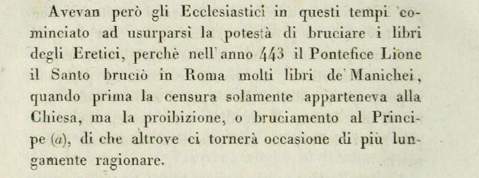

Pope Leo burns the Manichaean books (book III, ch. VI, p. 478)
Italian: Milan 1821, vol. I p. 478, scan n493, at the end of the section on Church jurisdiction, just before § VII, “Beni temporali”. Highlighted: what Lecky reports.

The clergy, however, had begun in these times to usurp the power of burning the books of heretics, for in the year 443 Pope Leo the Saint burned many books of the Manichaeans in Rome, whereas before, the censure alone belonged to the Church, but the prohibition, or the burning, to the prince (a); a matter we shall have occasion to discuss at greater length elsewhere.
Translation: this edition’s draft.
Original Italian
Avevan però gli Ecclesiastici in questi tempi cominciato ad usurparsi la potestà di bruciare i libri degli Eretici, perchè nell’anno 443 il Pontefice Lione il Santo bruciò in Roma molti libri de’ Manichei, quando prima la censura solamente apparteneva alla Chiesa, ma la proibizione, o bruciamento al Principe (a), di che altrove ci tornerà occasione di più lungamente ragionare.
Lecky (vol. II, ch. V, text at note 18): “At first, though the condemnation belonged to the Church, the execution of the sentence was regarded as the prerogative of the civil ruler; but as early as 443 we find Pope St. Leo burning books of the Manichæans on his own authority.” This is Giannone’s sentence in English, down to the distinction between condemning and burning.
Further down the rabbit hole
Sources that Lecky cites in the notes next to the ones that cite this page.
- Bianchi, Traité de la puissance ecclésiastiqueAn Ultramontane friar on when a people may depose its king, and the Scot who ‘sold his pen’ to James I
- Bossuet, Defensio declarationis cleri gallicaniKings as fathers: “Abimelech” means “My father the king”
- Hallam, View of the State of Europe during the Middle Ages, vol. 1Hallam quoted, with three small changes
- Sarpi, Historia dell’origine, forma, leggi ed uso dell’ufficio dell’InquisizioneA Venetian friar on how churchmen changed their tune about princes
- Sleidan, The General History of the ReformationShould all Jewish books be burned? Reuchlin said no, and Europe took sides
- Suárez, Defensio fidei catholicae, Book VIMay the Pope release subjects from their oath to a king? The Jesuit reply to James I


Backlinks
Every place in Rationalism in Europe that links to this page (generated automatically when the site is built).